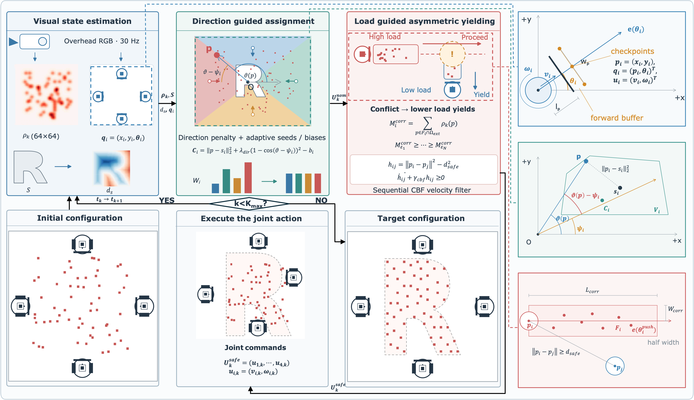

This letter proposes a hierarchical control and task allocation framework for efficient and collision free granular pile redistribution. Specifically, our architecture couples an upper guidance layer that fuses particle density fields with signed distance fields to direct material flow, and a lower execution layer that uses control barrier functions to enforce collision avoidance. Furthermore, we formulate an adaptive Voronoi partitioning scheme that integrates a directional penalty for favorable pushing alignment alongside particle density and transport distance metrics to jointly update region weights and centroids for dynamic load balancing. Finally, a payload prioritized dynamic yielding strategy is embedded within the safety constraints, compelling robots with lower forward particle occupancy to yield to heavily burdened teammates and minimize task interruptions. The effectiveness of the proposed method is validated through experiments with four E-Puck2 robots equipped with pushing blades.

Couples a 64×64 Eulerian particle density field ρk with the target Euclidean SDF dS to pair exterior clusters with unfilled interior vacancies while limiting steering deviation.
Augments squared Euclidean distance with a cosine angular penalty λdir and alternates tethered centroid migration with capacity bias adaptation to balance regional workloads Wi.
Sorts active robots by forward corridor particle occupancy Micorr and applies sequential CBF velocity filtering with deadlock retraction so lightly loaded robots yield to heavily loaded peers.
All experiments are conducted on a physical multi-robot testbed with four E-Puck2 mobile robots of 7.0 cm diameter, each fitted with a custom 4.4 cm 3D-printed front pushing plate, operating in a 0.5 m × 0.5 m arena containing 60 red 3D-printed granular blocks of 2 cm side length. An overhead RGB camera running at 1280×720 and 30 Hz tracks ArUco markers for real-time planar poses and updates the 64×64 density field ρk, while velocity commands are sent at 25 Hz via ROS 2 over Wi-Fi. Each trial executes Kmax = 50 steps, with each step comprising outer-track repositioning followed by a 1.65 s synchronized inward pushing stroke.
Comparison of final target mass ratio η50, exterior spatial transport cost J50, area coverage Cov.50, pushing alignment error Align., mean inter-robot workload standard deviation σ̄W, and high-load stroke interruption rate High int. across 50 pushing steps.
| Method | η50 % ↑ | J50 ↓ | Cov.50 % ↑ | Align. ° ↓ | σ̄W ↓ | High int. % ↓ |
|---|---|---|---|---|---|---|
| Ours | 80.3 | 0.70 | 53.2 | 16.2 | 64.2 | 0.0 |
| Centroid | 75.0 | 1.38 | 53.4 | 31.0 | - | - |
| Static Quadrant | 73.3 | 1.22 | 50.4 | 6.7 | 286.7 | - |
| Weighted Voronoi Partition | 69.5 | 2.54 | 48.3 | 26.3 | 227.1 | - |
| Risk-driven yielding | 69.4 | 3.40 | 49.0 | - | - | 22.2 |
| Symmetric yielding | 78.3 | 0.83 | 51.7 | - | - | 50.0 |